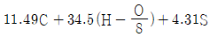
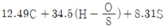
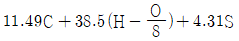
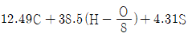
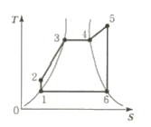
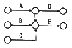
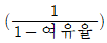
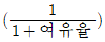
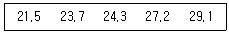

에너지관리기능장 (2017-07-08 기출문제)
1과목: 임의 구분
1. 공기예열기를 설치하였을 경우 나타나는 현상이 아닌 것은?
- 예열공기의 공급으로 불완전 연소가 증가한다.
- 노 내의 연소속도가 빨라진다.
- 보일러의 열효율이 높아진다.
- 배기가스의 열손실이 감소된다.
(정답률: 87%)

2. 전열면적이 12m2인 온수발생 보일러에 대해 방출관의 안지름 크기 기준은?
- 15mm 이상
- 20mm 이상
- 25mm 이상
- 30mm 이상
(정답률: 55%)
3. 안전밸브의 설치 및 관리에 대한 설명으로 옳은 것은?
- 안전밸브가 누설하여 증기가 새는 경우 스프링을 더 조여 누설을 막는다.
- 설정압력에 도달하여도 안전밸브가 동작하지 않을 때 밸브몸체를 두드려 동작이 되는지 확인한다.
- 안전밸브의 분해 수리를 위하여 안전밸브 입구측에 스톱밸브를 설치한다.
- 안전밸브의 작동은 확실하고 안정되어 있어야 한다.
(정답률: 91%)
4. 소형보일러가 옥내에 설치되어 있는 보일러실에 연료를 저장할 때에는 보일러 외측을부터 최소 몇 m 이상 거리를 두어야 하는가? (단, 반격벽이 설치되어 있지 않은 경우이다.)
- 1m
- 2m
- 3m
- 4m
(정답률: 73%)
5. 보일러의 부속 장치 중 감압밸브 사용 시 옳은 것은?
- 응축수 회수관이나 탱크에 재 증발 증기발생량이 증가한다.
- 감압 전후의 1차측과 2차측의 증기의 총열량은 변하지 않는다.
- 고압증기를 감압시켜 저압 증기로 변화시키면 현열이 증가한다.
- 고압증기는 저압증기보다 비체적이 크기 때문에 같은 양의 증기 수송 시 저압증기로 해야 보온 재료비가 적게 든다.
(정답률: 73%)
6. 증기보일러에서 안전밸브 및 압력방출장치의 크기를 20A로 할 수 있는 경우는?
- 최고사용압력 1MPa 이하의 보일러
- 최고사용압력 0.5MPa 이하의 보일러로 전열면적 2m2 이하의 보일러
- 최고사용압력 0.7MPa 이하의 보일러로 동체의 안지름이 500mm 이하이며 동체의 길이가 1200mm 이하의 보일러
- 최대증발량 7t/h 이하의 관류보일러
(정답률: 80%)
7. 증기 보일러에서 규정 상용압력 이상시 파괴위험을 방지하기 위해 설치하는 밸브는?
- 개폐밸브
- 역지밸브
- 정지밸브
- 안전밸브
(정답률: 93%)
8. 복사난방의 패널구조에 의한 분류 중 강판이나 알루미늄 판에 강관이나 동관 등을 용접 또는 철물을 사용하여 부착하고 배면에는 단열재를 붙여 열손실을 방지하도록 하며, 일정한 규격의 제품을 조합하여 복사면을 구성하도록 한 방식은?
- 파이프매설식
- 유닛패널식
- 덕트식
- 벽패널식
(정답률: 85%)
9. 고체 및 액체연료 1kg 에 대한 이론공기량(kg/kg)을 중량으로 구하는 식은? (단, C : 탄소, H : 수소, O : 산소, S : 황)




(정답률: 68%)
10. 굴뚝의 통풍력을 구하는 식으로 옳은 것은? (단, Z=통풍력(mmAq), H=굴뚝의 높이(m), γa=외기의 비중량(kgf/m3), γg=배가기스의 비중량(kgf/m3) 이다.)
- Z = (γg - γa)H
- Z = (γa - γg)H
- Z = (γg - γa)/H
- Z = (γa - γg)/H
(정답률: 67%)
11. 사이클론(cyclone) 집진장치의 주 원리는?
- 압력차에 의한 집진
- 물에 의한 입자의 여과
- 망(screen)에 의한 여과
- 입자의 원심력에 의한 집진
(정답률: 91%)
12. 연소 안전장치에서 플레임 로드에 관한 설명으로 옳은 것은?
- 열적 검출 방식으로 화염의 발열을 이용한 것이다.
- 화염의 방사선을 전기 신호로 바꾸어 이용한 것이다.
- 화염의 전기 전도성을 이용한 것이다.
- 화염의 자외선 광전관을 사용한 것이다.
(정답률: 75%)
13. 방열기에 대한 설명으로 옳은 것은?
- 방열기에서 표준방열량을 구하는 평균온도 기준은 온수가 80℃이고, 증기는 102℃이다.
- 주철제 방열기는 강제대류식이며, 응축수가 가진 현열을 이용하므로 증기사용량이 감소한다.
- 방열기는 증기와 실내공기의 온도차에 의한 복사열에 의해서만 난방을 한다.
- 방열기의 표준방열량은 증기는 650 W/m2이고, 온수는 450W/m2 이다.
(정답률: 76%)
14. 증기 헤드(steam head)의 설치 목적으로 틀린 것은?
- 건도가 높은 증기를 공급하여 수격작용을 방지하기 위하여
- 각 사용처에 증기공급 및 정지를 편리하게 하기 위하여
- 불필요한 증기 공급을 막아 열손실을 방지하기 위하여
- 필요한 압력과 양의 증기를 사용처에 공급하기 좋게 하기 위하여
(정답률: 70%)
15. 강제순환 수관보일러에 있어서 순환비란?
- 순환 수량과 포화수의 비율
- 포화 증기량과 포화 수량의 비율
- 순환 수량과 발생 증기량의 비율
- 발생 증기량과 포화 수량의 비율
(정답률: 63%)
16. 2장의 전열 판을 일정한 간격을 둔 상태에서 시계의 태엽 모양으로 감아 나간 것으로 오염저항 및 저유량에서 심한 난기류 등이 유발되는 곳에 사용하는 열교환기의 형식은?
- 플레이트식 열교환기
- 2중관식 열교환기
- 스파일럴형 열교환기
- 쉘 엔 튜브식 열교환기
(정답률: 83%)
17. 실내온도가 18℃, 외기온도가 –10℃이며, 열관류율이 5kcal/m2·h·℃인 건물의 난방부하는? (단, 바닥, 천정, 벽체 등 총면적은 180m2이고, 방위계수는 1.15 이다.)
- 21990 kcal/h
- 22100 kcal/h
- 25200 kcal/h
- 28980 kcal/h
(정답률: 55%)
18. 보일러의 그을음 취출장치인 수트 블로워(soot blower)에 대한 설명으로 틀린 것은?
- 수트 블로워의 설치목적은 전열면에 부착된 그을음을 제거하여 전열효율을 좋게 하기 위해서다.
- 종류에는 장발형, 정치회전형, 단발형 및 건타입 수트 블로워 등이 있다.
- 수트 블로워 분출(취출)시에는 통풍력을 크게 한다.
- 수트 블로워 분출 전에는 저온부식방지를 위해 취출기 내부에 드레인 배출을 삼가한다.
(정답률: 76%)
19. 보일러의 보염장치 설치 목적에 관한 설명으로 틀린 것은?
- 연소용 공기의 흐름을 조절하여 준다.
- 확실한 착화가 되돌고 한다.
- 연료의 분무를 확실하게 방지한다.
- 화염의 형상을 조절한다.
(정답률: 72%)
20. 1일 급수량이 36000L인 보일러에서 급수 중 고형분 농도가 100 ppm, 보일러수의 허용 고형분이 2000 ppm 일 때 1일 분출량은? (단, 응축수는 회수하지 않는다.)
- 1625 L/day
- 1785 L/day
- 1895 L/day
- 1945 L/day
(정답률: 52%)
2과목: 임의 구분
21. 보일러에서 측정한 배기가스 온도가 240℃, 배기 가스량이 100 kg/h이고, 외기 온도가 20℃, 실내온도가 25℃인 경우 배출되는 배기가스의 손실열량은? (단, 배기가스 및 공기의 비열은 각각 0.33, 0.31 kcal/kg·℃ 이다.)
- 6045 kcal/h
- 6820 kcal/h
- 7095 kcal/h
- 7260 kcal/h
(정답률: 46%)
22. 자동식 가스분석계 중 화학적 가스분석계에 속하는 측정법은?
- 연소열법
- 밀도법
- 열전도도법
- 자화율법
(정답률: 67%)
23. 보일러 출력계산에 사용하는 난방부하의 계산방법이 아닌 것은?
- 상당 방열면적(EDR)으로부터 계산
- 예열부하로부터 열손실 계산
- 열손실 열량으로부터 계산
- 간이식으로부터 열손실 계산
(정답률: 70%)
24. 보일러 수중의 용존 가스를 제거하는 장치는?
- 저면 분출장치
- 표면 분출장치
- 탈기기
- pH 조정장치
(정답률: 87%)
25. 다음 랭킨사이클 T-S(온도-엔트로피)선도에서 단열팽창 구간은?

- 1 - 2
- 2 – 3 - 4
- 5 - 6
- 6 – 1
(정답률: 81%)
26. 보일러 급수의 순환계통 외처리에서 부유 및 유기물의 제거방법이 아닌 것은?
- 폭기법
- 침전법
- 응집법
- 여과법
(정답률: 75%)
27. 두께 3cm, 면적 2m2인 강판의 열전도량을 6000kcal/h로 하기 위한 강판 양면의 필요한 온도차는? (단, 열전도율 λ = 45 kcal/m·h·℃ 이다.)
- 2℃
- 2.5℃
- 3℃
- 3.5℃
(정답률: 52%)
28. 원관 속 층류 유동이 되고 있을 때, 압력 손실에 관한 설명으로 옳은 것은?
- 유체의 점성에 비례한다.
- 관의 길이에 반비례한다.
- 유량에 반비례한다.
- 관경의 3제곱에 비례한다.
(정답률: 65%)
29. 실제 열사이클에 있어서는 각부에서의 손실 때문에 이상사이클가는 일치하지 않는데, 그 손실 요인으로 가장 거리가 먼 것은?
- 배관 손실
- 과열기 손실
- 터빈 손실
- 복수기 손실
(정답률: 60%)
30. 일의 열당량의 값은?
- 1/427 kcal/kg
- 427 dyne/kg
- 1/427 kcal/kg·m
- 427 kg·m/kcal
(정답률: 75%)
31. 보일러가 과열이 되면 그 부분의 강도가 저하되는데 이것이 심한 경우에는 보일러의 압력에 못 견디어 안쪽으로 오므라드는 것을 압궤라 한다. 압궤를 일으킬 수 있는 부분으로 가장 거리가 먼 것은?
- 수관
- 연소실
- 노통
- 연관
(정답률: 76%)
32. 수관내부에 부착되어 열전도를 저하시키는 스케일의 생성원인으로 가장 거리가 먼 것은?
- 농축에 의하여 포화상태로 석출되는 경우
- 물에 불용성의 물질이 유입되는 경우
- 온도상승에 따라 용해도가 저하하여 석출되는 경우
- 산성용액에서 용해도가 증가하여 석출되는 경우
(정답률: 61%)
33. 보일러수 중에 포함된 실리카(SiO2)에 관한 설명으로 틀린 것은?
- 실리카 함유량이 많은 스케일은 연질이므로 제거가 쉽다.
- 알루미늄과 결합해서 여러 가지 형의 스케일을 생성한다.
- 저압 보일러에서는 알칼리도를 높혀 스케일화를 방지할 수 있다.
- 보일러수에 실리카가 많으면 캐리오버에 의해 터빈날개 등에 부착하여 성능을 저하시킬 수 있다.
(정답률: 82%)
34. 0.5W의 전열기로 20℃의 물 5kg을 80℃ 까지 가열하는데 소요되는 시간은 약 몇 분인가? (단, 가열효율은 90% 이다.)
- 46.5분
- 21.0분
- 32.3분
- 12.7분
(정답률: 50%)
35. 유체 속에 잠겨진 경사 평면에 작용하는 힘의 작용점은?
- 면의 도심에 있다.
- 면의 도심보다 위에 있다.
- 면의 중심에 있다.
- 면의 도심보다 아래에 있다.
(정답률: 72%)
36. 보일러 연소 관리에 관한 설명으로 틀린 것은?
- 보일러 본체 및 내화벽돌에 화염을 직접 충돌시키지 않는다.
- 연소량을 증가할 때에는 연료 공급량을 우선 늘리고, 연소량을 감소할 때는 통풍량부터 줄인다.
- 연소상태 및 화염상태 등을 수시로 감시한다.
- 노 내를 고온으로 유지한다.
(정답률: 79%)
37. 보일러수 내처리를 할 때 탈산소제로 쓰이지 않는 것은?
- 탄닌
- 아황산소다
- 히드라진
- 암모니아
(정답률: 82%)
38. 증기의 건도가 0 인 상태는?
- 포화수
- 포화증기
- 습증기
- 건증기
(정답률: 69%)
39. 버너 정비시 오일 콘의 끝단이 흠이 나 있으면 분무상태가 나빠지므로 눈금이 세밀한 줄을 사용하여 다듬질해야 하는 버너형식은?
- 고압분무식
- 회전식
- 유압분무식
- 건타입
(정답률: 61%)
40. 이온교환처리장치의 운전공정에서 재생탑에 원수를 통과시켜 수중의 일부 또는 전부의 이온을 이온교환 또는 제거시키는 공정을 의미하는 것은?
- 통약
- 압출
- 부하
- 수세
(정답률: 69%)
3과목: 임의 구분
41. 에너지이용 합리화법에 따라 검사대상기기의 계속사용검사에 대한 연기는 검사유효기간 만료인 기준으로 최대 언제까지 가능한가? (단, 만료일이 9월 1일 이후인 경우 제외한다.)
- 2개월 이내
- 6개월 이내
- 8개월 이내
- 당해연도 말까지
(정답률: 73%)
42. 연강용 피복 아크 용접봉 중 용입이 깊고, 비드가 깨끗하며, 작업성이 우수한 용접봉으로서 아래보기 수평 필릿용접에 가장 적합한 것은?
- E4316
- E4313
- E4303
- E4327
(정답률: 68%)
43. 에너지이용 합리화법에 따라 에너지저장시설의 보유 또는 저장의무의 부과 시 정당한 이유 없이 이를 거부하거나 이행하지 아니한 자에 대한 벌칙 기준은?
- 2년 이하의 징역 또는 2천만원 이하의 벌금
- 5백만원 이하의 벌금
- 1년 이하징역 또는 1천만원 이하의 벌금
- 1천만원 이하의 벌금
(정답률: 79%)
44. 온도조절밸브 선정 시 고려할 사항이 아닌 것은?
- 밸브의 구경 및 배관경
- 사용 유체의 종류, 압력, 온도와 유량
- 가열 또는 냉각되는 유체의 종류와 압력
- 최소 유량 시 밸브의 허용압력 손실
(정답률: 78%)
45. 내열온도가 400~500℃이고, 금속 광택이 있으며 방열기 등의 외면에 도장하는 도료로 적당한 것은?
- 산화철 도료
- 콜타르 도료
- 알루미늄 도료
- 합성수지 도료
(정답률: 82%)
46. 배관을 고정하는 받침쇠인 행거(hanger)의 종류가 아닌 것은?
- 스프링 행거
- 롤러 행거
- 콘스턴트 행거
- 리지드 행거
(정답률: 73%)
47. 관 장치의 설계, 제작, 시공, 운전, 조작, 공정 수정 등에 도움을 주기 위해 주 계통의 라인, 계기, 제어기 및 장치기기 등에서 필요한 자료를 도시한 도면을 무엇이라고 하는가?
- 계통도(flow diagram)
- 관 장치도
- PID(Piping Instrument Diagram)
- 입면도
(정답률: 76%)
48. 온수귀환방식 중 역귀환 방식에 관한 설명으로 옳은 것은?
- 배관길이를 짧게 하여 온수공급거리에 따라 보일러에서 가까운 곳과 먼 곳의 방열기 온도차를 늘리는 방식이다.
- 각 방열기에 공급되는 유량분배를 균등하게 하여 가까운 곳과 먼 곳의 방열기 온도차를 줄이는 방식이다.
- 각 방열기에 공급되는 유량분배에 차등을 두어 가까운 곳과 먼 곳의 방열기 온도차를 줄이는 방식이다.
- 방열기를 통과한 귀환온수가 순차적으로 보일러에 귀환하여 가까운 곳과 먼 곳의 방열기 온도차를 늘리는 방식이다.
(정답률: 73%)
49. 에너지법에서 정한 에너지위원회의 구성 및 운영에 관한 설명으로 옳은 것은?
- 위촉위원의 임기는 2년으로 하고, 연임할 수 있다.
- 위촉위원의 임기는 1년으로 하고, 연임할 수 있다.
- 위촉위원의 임기는 2년으로 하고, 연임할 수 없다.
- 위촉위원의 임기는 1년으로 하고, 연임할 수 없다.
(정답률: 84%)
50. 폴리에틸렌관의 이음방법으로 틀린 것은?
- 테이퍼 조인트 이음
- 인서트 이음
- 용착슬리브 이음
- 심플렉스 이음
(정답률: 68%)
51. 보온재의 구비조건으로 틀린 것은?
- 열전도율이 클 것
- 비중이 작을 것
- 어느 정도 기계적 강도가 있을 것
- 흡습성이 작을 것
(정답률: 83%)
52. 가옥트랩 또는 메인트랩을서 건물 내의 배수 수평 주관의 끝에 설치하여 공공 하수관에서의 유독 가스가 건물 안으로 침입하는 것을 방지하는데 사용하는 트랩은?
- S트랩
- P트랩
- U트랩
- X트랩
(정답률: 81%)
53. 2개 이상의 엘보를 사용하여 신축을 흡수하는 이음은?
- 슬리브형 신축이음
- 벨로스형 신축이음
- 스위블형 신축이음
- 루프형 신축이음
(정답률: 75%)
54. 스프링 백(spring back)이 일어나는 원인은?
- 탄성 복원력 때문에
- 영구변형이 많이 일어나므로
- 극한 강도가 너무 작으므로
- 원인이 없음
(정답률: 87%)
55. 다음 그림의 AOA(Activity-on-Arc)네트워크에서 E작업을 시작하려면 어떤 작업들이 완료되어야 하는가?

- B
- A, B
- B, C
- A, B, C
(정답률: 86%)
56. 표준시간을 내경법으로 구하는 수식으로 맞는 것은?
- 표준시간 = 정미시간 + 여유시간
- 표준시간 = 정미시간 × ( 1 + 여유율)
- 표준시간 = 정미시간 ×

- 표준시간 = 정미시간 ×

(정답률: 78%)
57. 검사특성곡선(OC Curve)에 관한 설명으로 틀린 것은? (단, N : 로트의 크기, n : 시료의 크기, c : 합격판정개수이다.)
- N, n이 일정할 때 c가 커지면 나쁜 로트의 합격률은 높아진다.
- N, c가 일정할 때 n이 커지면 좋은 로트의 합격률은 낮아진다.
- N/n/c의 비율이 일정하게 증가하거나 감소하는 퍼센트 샘플링 검사 시 좋은 로트의 합격률은 영향이 없다.
- 일반적으로 로트의 크기 N이 시료 n에 비해 10배 이상 크다면, 로트의 크기를 증가시켜도 나쁜 로트의 합격률은 크게 변화하지 않는다.
(정답률: 66%)
58. 품질특성에서 X관리도로 관리하기에 가장 거리가 먼 것은?
- 볼펜의 길이
- 알코올 농도
- 1일 전력소비량
- 나사길이의 부적함품 수
(정답률: 78%)
59. 다음 데이터로부터 통계량을 계산한 것 중 틀린 것은?

- 범위(R) = 7.6
- 제곱합(S) = 7.59
- 중앙값(Me) = 24.3
- 시료분산(s2) = 8.988
(정답률: 70%)
60. 브레인스토밍(Brainstorming)과 가장 관계가 깊은 것은?
- 특성요인도
- 파레토도
- 히스토그램
- 회귀분석
(정답률: 79%)